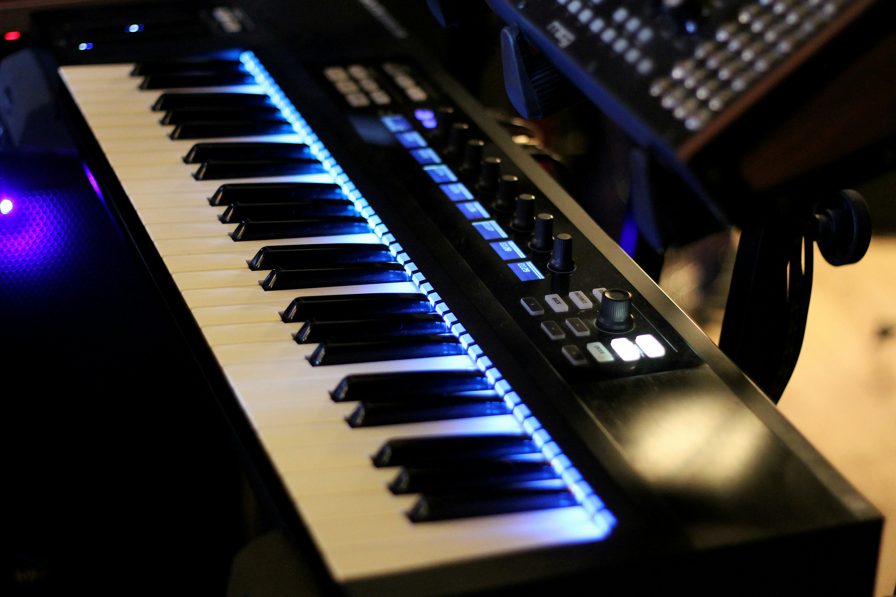

O que é um Teclado Musical?

O Teclado Musical é um instrumento eletrônico ou eletroacústico composto por um conjunto de teclas organizadas em uma ordem lógica que, ao serem pressionadas, acionam circuitos e componentes internos para gerar som.
Visualmente, a sua interface segue a mesma disposição secular do piano acústico: uma sequência alternada de teclas brancas (que representam as notas naturais: Do, Ré, Mi, Fá, Sol, Lá, Si) e teclas pretas (que representam os acidentes musicais: sustenidos e bemóis).
Como o Som é Gerado?
Diferente do Piano Mecânico — onde a tecla faz um pequeno martelo bater em uma corda esticada —, no teclado musical a tecla atua como um interruptor eletrônico.
Ao pressionar uma tecla, você fecha um circuito elétrico que envia um sinal para o processador de áudio do instrumento. O som emitido pode vir de duas formas principais:
- Amostragem (Sampling): O teclado reproduz um arquivo de áudio pré-gravado do som real de um instrumento (como um piano gravado em estúdio nota por nota).
- Síntese Sonora: O circuito interno gera formas de onda eletrônicas que criam timbres totalmente novos ou sintetizam timbres clássicos.
Principais Recursos e Características
- Polifonia: É a capacidade que o teclado tem de emitir vários sons simultaneamente. Teclados com alta polifonia permitem tocar acordes complexos e usar o pedal de sustentação sem que as primeiras notas sejam "cortadas".
- Sensibilidade ao Toque (Velocity): Recursos presentes em modelos intermediários e avançados onde o volume e o timbre mudam conforme a intensidade e a força com que você aperta a tecla (tocando suave sai fraco, tocando forte sai alto).
- Conectividade MIDI e USB: Permite conectar o teclado a computadores, celulares e tablets para enviar comandos de nota para programas de gravação (DAWs) e instrumentos virtuais (VSTs).